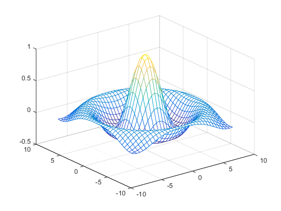
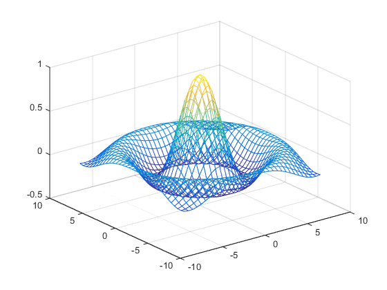
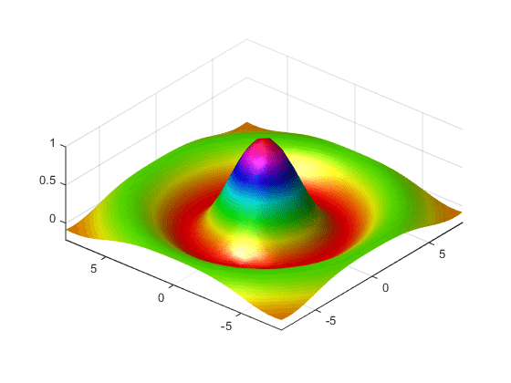
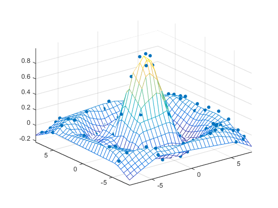
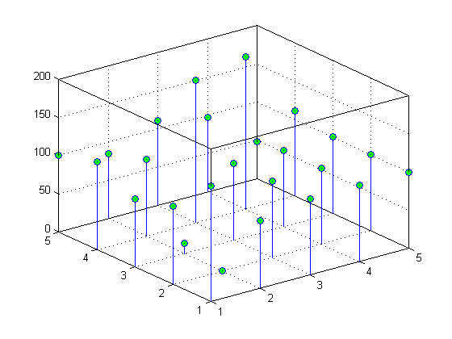

Representing Data as a Surface
Functions for Plotting Data Grids
MATLAB® graphics defines a surface by the z-coordinates of points above a rectangular grid in the x-y plane. The plot is formed by joining adjacent points with straight lines. Surface plots are useful for visualizing matrices that are too large to display in numerical form and for graphing functions of two variables.
MATLAB can create different forms of surface plots. Mesh plots are wire-frame surfaces that color only the lines connecting the defining points. Surface plots display both the connecting lines and the faces of the surface in color. This table lists the various forms.
Function | Used to Create |
|---|---|
mesh, surf | Surface plot |
meshc, surfc | Surface plot with contour plot beneath it |
meshz | Surface plot with curtain plot (reference plane) |
pcolor | Flat surface plot (value is proportional only to color) |
surfl | Surface plot illuminated from specified direction |
surface | Low-level function (on which high-level functions are based) for creating surface graphics objects |
Functions for Gridding and Interpolating Data
These functions are useful when you need to restructure and interpolate data so that you can represent this data as a surface.
Function | Used to Create |
|---|---|
meshgrid | Rectangular grid in 2-D and 3-D space |
griddata | Interpolate scattered data |
griddedInterpolant | Interpolant for gridded data |
scatteredInterpolant | Interpolate scattered data |
For a discussion of how to interpolate data, see Interpolating Gridded Data and Interpolating Scattered Data.
Mesh and Surface Plots
The mesh and surf commands create 3-D surface plots of matrix data. If Z is a matrix for which the elements Z(i,j) define the height of a surface over an underlying (i,j) grid, then
mesh(Z)
generates a colored, wire-frame view of the surface and displays it in a 3-D view. Similarly,
surf(Z)
generates a colored, faceted view of the surface and displays it in a 3-D view. Ordinarily, the facets are quadrilaterals, each of which is a constant color, outlined with black mesh lines, but the shading command allows you to eliminate the mesh lines (shading flat) or to select interpolated shading across the facet (shading interp).
Surface object properties provide additional control over the visual appearance of the surface. You can specify edge line styles, vertex markers, face coloring, lighting characteristics, and so on.
Visualizing Functions of Two Variables
To display a function of two variables, z = f(
x,y), generateXandYmatrices consisting of repeated rows and columns, respectively, over the domain of the function. You will use these matrices to evaluate and graph the function.The
meshgridfunction transforms the domain specified by two vectors,xandy, into matricesXandY. You then use these matrices to evaluate functions of two variables: The rows ofXare copies of the vectorxand the columns ofYare copies of the vectory.
To illustrate the use of meshgrid, consider the sin(r)/r or sinc function. To evaluate this function between -8 and 8 in both x and y, you need pass only one vector argument to meshgrid, which is then used in both directions.
[X,Y] = meshgrid(-8:.5:8); R = sqrt(X.^2 + Y.^2) + eps;
The matrix R contains the distance from the center of the matrix, which is the origin. Adding eps prevents the divide by zero (in the next step) that produces Inf values in the data.
Forming the sinc function and plotting Z with mesh results in the 3-D surface.
Z = sin(R)./R; figure mesh(X,Y,Z)

Hidden Line Removal
By default, MATLAB removes lines that are hidden from view in mesh plots, even though the faces of the plot are not filled. You can disable hidden line removal and allow the faces of a mesh plot to be transparent with the hidden command:
hidden off
Emphasizing Surface Shape
MATLAB provides a number of techniques that can enhance the information content of your graphs. For example, this graph of the sinc function uses the same data as the previous graph, but employs lighting, view adjustments, and a different colormap to emphasize the shape of the graphed function (daspect, axis, view, camlight).
figure colormap hsv surf(X,Y,Z,'FaceColor','interp',... 'EdgeColor','none',... 'FaceLighting','gouraud') daspect([5 5 1]) axis tight view(-50,30) camlight left

See the surf function for more information on surface plots.
Surface Plots of Nonuniformly Sampled Data
You can use meshgrid to create a grid of uniformly sampled data points at which to evaluate and graph the sinc function. MATLAB then constructs the surface plot by connecting neighboring matrix elements to form a mesh of quadrilaterals.
To produce a surface plot from nonuniformly sampled data, use scatteredInterpolant to interpolate the values at uniformly spaced points, and then use mesh and surf in the usual way.
Example – Displaying Nonuniform Data on a Surface
This example evaluates the sinc function at random points within a specific range and then generates uniformly sampled data for display as a surface plot. The process involves these tasks:
Use
linspaceto generate evenly spaced values over the range of your unevenly sampled data.Use
meshgridto generate the plotting grid with the output oflinspace.Use
scatteredInterpolantto interpolate the irregularly sampled data to the regularly spaced grid returned bymeshgrid.Use a plotting function to display the data.
Generate unevenly sampled data within the range [-8, 8] and use it to evaluate the function:
x = rand(100,1)*16 - 8; y = rand(100,1)*16 - 8; r = sqrt(x.^2 + y.^2) + eps; z = sin(r)./r;
The
linspacefunction provides a convenient way to create uniformly spaced data with the desired number of elements. The following statements produce vectors over the range of the random data with the same resolution as that generated by the -8:.5:8 statement in the previoussincexample:xlin = linspace(min(x),max(x),33); ylin = linspace(min(y),max(y),33);
Now use these points to generate a uniformly spaced grid:
[X,Y] = meshgrid(xlin,ylin);
The key to this process is to use
scatteredInterpolantto interpolate the values of the function at the uniformly spaced points, based on the values of the function at the original data points (which are random in this example). This statement uses the default linear interpolation to generate the new data:f = scatteredInterpolant(x,y,z); Z = f(X,Y);
Plot the interpolated and the nonuniform data to produce:
figure mesh(X,Y,Z) %interpolated axis tight; hold on plot3(x,y,z,'.','MarkerSize',15) %nonuniform

Reshaping Data
Suppose you have a collection of data with the following (X, Y, Z) triplets:
| X | Y | Z |
|---|---|---|
| 1 | 1 | 152 |
| 2 | 1 | 89 |
| 3 | 1 | 100 |
| 4 | 1 | 100 |
| 5 | 1 | 100 |
| 1 | 2 | 103 |
| 2 | 2 | 0 |
| 3 | 2 | 100 |
| 4 | 2 | 100 |
| 5 | 2 | 100 |
| 1 | 3 | 89 |
| 2 | 3 | 13 |
| 3 | 3 | 100 |
| 4 | 3 | 100 |
| 5 | 3 | 100 |
| 1 | 4 | 115 |
| 2 | 4 | 100 |
| 3 | 4 | 187 |
| 4 | 4 | 200 |
| 5 | 4 | 111 |
| 1 | 5 | 100 |
| 2 | 5 | 85 |
| 3 | 5 | 111 |
| 4 | 5 | 97 |
| 5 | 5 | 48 |
You can represent data that is in vector form using various MATLAB graph types, such as surf, contour, and stem3, by first restructuring the data. Use the (X, Y) values to define the coordinates in an x-y plane at which there is a Z value. The reshape and transpose functions can restructure your data so that the (X, Y, Z) triplets form a rectangular grid:
x = reshape(X,5,5)'; y = reshape(Y,5,5)'; z = reshape(Z,5,5)';
Reshaping results in three 5–by-5 arrays:
x =
1 2 3 4 5
1 2 3 4 5
1 2 3 4 5
1 2 3 4 5
1 2 3 4 5
y =
1 1 1 1 1
2 2 2 2 2
3 3 3 3 3
4 4 4 4 4
5 5 5 5 5
z =
152 89 100 100 100
103 0 100 100 100
89 13 100 100 100
115 100 187 200 111
100 85 111 97 48You can now represent the values of Z with respect to X and Y. For example, create a 3–D stem graph:
stem3(x,y,z,'MarkerFaceColor','g')

Parametric Surfaces
The functions that draw surfaces can take two additional vector or matrix arguments to describe surfaces with specific x and y data. If Z is an m-by-n matrix, x is an n-vector, and y is an m-vector, then
mesh(x,y,Z,C)
describes a mesh surface with vertices having color C(i,j) and located at the points
(x(j), y(i), Z(i,j))
where x corresponds to the columns of Z and y to its rows.
More generally, if X, Y, Z, and C are matrices of the same dimensions, then
mesh(X,Y,Z,C)
describes a mesh surface with vertices having color C(i,j) and located at the points
(X(i,j), Y(i,j), Z(i,j))
This example uses spherical coordinates to draw a sphere and color it with the pattern of pluses and minuses in a Hadamard matrix, an orthogonal matrix used in signal processing coding theory. The vectors theta and phi are in the range -π ≤ theta ≤ π and -π/2 ≤ phi ≤ π/2. Because theta is a row vector and phi is a column vector, the multiplications that produce the matrices X, Y, and Z are vector outer products.
figure k = 5; n = 2^k-1; theta = pi*(-n:2:n)/n; phi = (pi/2)*(-n:2:n)'/n; X = cos(phi)*cos(theta); Y = cos(phi)*sin(theta); Z = sin(phi)*ones(size(theta)); colormap([0 0 0;1 1 1]) C = hadamard(2^k); surf(X,Y,Z,C) axis square